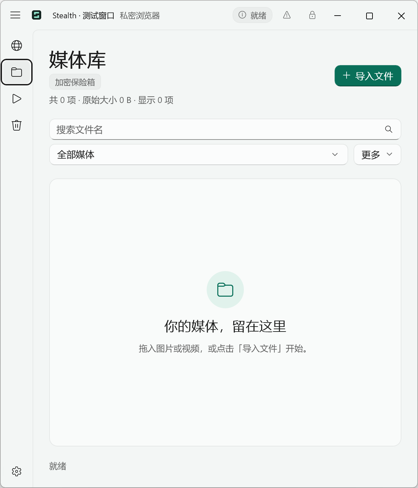

全新视觉，更清晰的秩序。
重新设计 Logo，以石墨与青玉贯穿深浅主题。更舒展的排版、更易读的提示，以及统一的锁屏、浏览器和媒体库。
r15 重磅更新 WINDOWS 原生
全新视觉，更顺手的交互，
更稳妥的文件保护。
你的私人工作空间，迎来新一页。
Windows 11 · x64 / ARM64 · 未签名预览版

一次完整的重新打磨
从看得见的界面，到每一次点击背后的工作。把日常会碰到的细节，一起向前推进。
重新设计 Logo，以石墨与青玉贯穿深浅主题。更舒展的排版、更易读的提示，以及统一的锁屏、浏览器和媒体库。
菜单按需创建，收藏建议减少重复计算，大媒体库的搜索合并更新。把工作留给真正需要它的时刻。
重新检查导出、取消、锁定、旧数据迁移与重置。减少误覆盖机会，让中断和异常也有明确的处理方式。
改进，可以核对
重构阶段，在同一台 ARM64 主机、相同配置下完成的可复现测试。只展示具体动作，不把局部结果放大成“所有网页都更快”。
新标签页的界面构造
30%
6.18 ms 4.32 ms
重构阶段 · .NET 8 / Debug ARM64 · 12 个空控件平均值。
50,000 条收藏的本地建议
81%
3.0615 ms 0.5950 ms
重构阶段 · .NET 8 · 合成数据，31 次样本中位数。
重构阶段的同配置 Debug ARM64 测试中，密码验证移出共享状态锁后，锁定操作的中位等待由 31.2069 ms 降至 0.0072 ms。
上述数据来自重构阶段的 .NET 8 同配置测量，不是不同运行时之间的速度对比。空标签数据来自相同 Debug ARM64 流程的较新验收结果；较早测得 2.94 / 3.31 / 3.77 ms，未只挑选最快的一轮。收藏建议使用固定合成数据，不能代表网络或整页加载。锁竞争同为 Debug、7 次样本，密码派生仍为 600,000 次；优化后锁定的最大观测等待为 1.2085 ms。
网页滚动 rAF 间隔的中位数前后均约 16.7 ms。这里不宣称网页 FPS 提升或总进程内存下降，也不把上述数字换算成整个应用的速度倍数。
查看方法、原始数据索引与完整报告
让内容成为主角
网页、图片和本地媒体，顺着你的节奏衔接。熟悉的能力都在，细节更顺手。
搜索打开的标签，恢复刚关闭的网页。切去媒体库再回来，继续原来的页面。
Ctrl + Shift + A搜索标签
网页和本地图片都能连续阅读。长图适宽、细节放大，退出网页阅读器后回到原来的位置。
←→切换图片
跨标签管理下载，暂停、继续或定位文件。将想保留的图片和视频另行导入加密媒体库，按需解密读取。
更稳妥的文件保护
核心测试通过 / 每个架构
ARM64 与 x64 各有 2 项因盘符映射环境限制跳过。阻止覆盖保险箱内文件与无关临时文件。取消操作时保留原目标，减少意外中断带来的影响。
解锁结果只能使用一次。锁定会撤销仍在进行的旧验证，过期会话也不能继续提交导入。
迁移保留旧源文件，已有目标不混入无关媒体。额外验证重置后重新加载不会让旧数据再次出现。
核心测试覆盖确定的场景，不等于第三方安全审计或对所有环境的保证。查看验收记录与已知限制 ↗
Stealth 不隐藏 IP，不能对抗同用户恶意软件或管理员。结束会话会尝试清理本应用浏览数据；崩溃或文件占用可能使清理延迟。
导入保险箱的媒体采用分块加密。下载仍是普通文件，不会自动进入保险箱，也不会因为结束会话而删除。
当前备份依赖 DPAPI。重装系统、换机或更换用户后可能无法恢复；重要原始文件请另行妥善备份。
现在，打开新一页
选择与你的电脑匹配的版本。完整解压，即可开始。
2026.11.14-r15-preview
这是未签名预览版。Windows 可能显示 SmartScreen 提示，请自行判断是否信任，不要关闭系统保护。
开始之前
Intel / AMD 选择 x64；Windows on Arm 选择 ARM64。不确定时，可在系统信息中确认。
打开 StealthWorkspace.exe，不在 ZIP 内运行。升级前保留原程序和重要文件备份，按指南处理桌面入口。
设置保险箱密码，开始浏览。先验证媒体导入、导出与备份检查，再安排日常使用。
再多了解一点
不作这样的承诺。本次实测针对空标签界面构造、本地收藏建议与锁等待；网络、站点内容和 WebView2 环境仍影响实际体验。网页 FPS 和总进程内存没有统一提升结论。
不是。Stealth 是使用 WinUI 3 与 WebView2 构建的独立项目，与 Microsoft 没有隶属关系，也不代表 Microsoft 背书。
当前备份依赖原 Windows 用户的 DPAPI，不保证换机或重装后恢复。请保留重要原始文件的独立备份，不要只依赖应用内备份。
应用会尝试让合适的后台页面休眠，但 WebView2 可能拒绝。音频、下载和全屏等场景需要继续工作，不能保证每个后台标签都休眠。
先查看故障排查，再到 GitHub Issues 提供版本、系统与复现步骤。请勿上传密码、保险箱、Cookie 或未经审阅的日志。